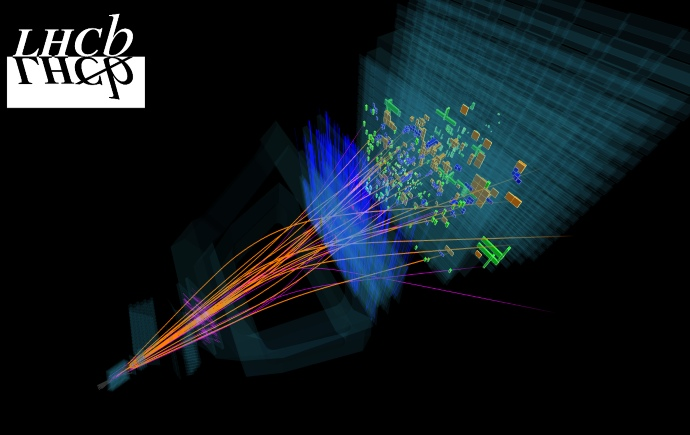
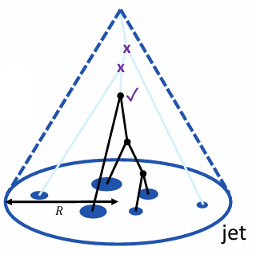
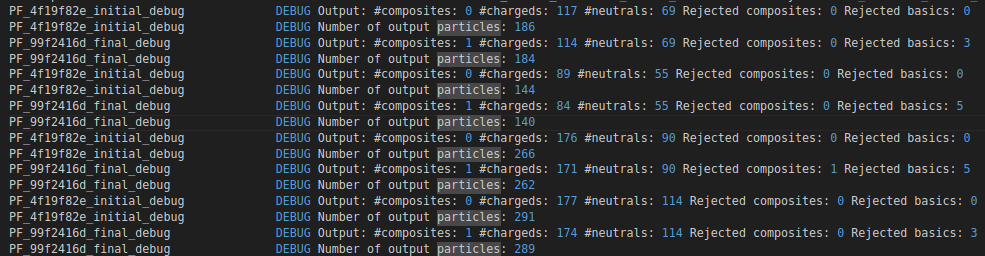

Basics
This section will introduce jets at a basic level. More detailed definitions are in resource links therein.
A jet (shown below) is a ‘collimated spray’ of particles that originate from a parton* and subsequently hadronise. Given that they are formed from the evolution of parton interactions, all the way to hadronisation and detection, jet observables can be used to study unique QCD effects, including fragmentation functions and particle hadronisation.

There are several observables of interest, and these can be found in detail in the following resources:
Looking inside jets: an introduction to jet substructure and boosted-object phenomenology (S. Marzani, G. Soyez & M. Spannowsky)
Jet Physics from the Ground Up (A. Larkoski)
Hadronic Jets (A. Barfi)
Algorithms and Combination Schemes
Experimentally, the particles comprising the jet is defined by an algorithm and a particle combination schemes. Some algorithms include (but are not limited to): fixed-cone, iterative-cone and sequential algorithms. Combination schemes include (but are not limited to): \(E\)-scheme, \(pT\)-weighted scheme and WTA (Winner-Take-All) scheme.
At LHCb, a commonly used jet definition is given by the anti-\(k_T\) algorithm with the \(E\)-scheme (addition of four-vectors). The anti-\(k_T\) algorithm clusters from hardest particle first. As such it is resilient to soft-radiation, but as a result is also blind to such effects. Therefore the algorithm should be chosen carefully. A unique property of the anti-\(k_T\) algorithm, compared to others such as \(k_T\) (\(k=1\)) or Cambridge-Aachen (\(k=0\)), is that it is infrared and collinear (IRC) safe at all orders. This also makes it safe to analyse from a theory perspective***. The anti-\(k_T\) algorithm is given by the application of the following steps where \(k=-1\) :
For each pair of particles \(i\), \(j\), define a distance
and a distance to the beam,
where \(p_{T_i}\) is the transverse momentum of the particle \(i\), \(\Delta R_{ij}^2 = (y_i-y_j)^2+(\phi_i-\phi_j)^2\), and \(R\) is the jet radius parameter**.
Find the smallest distance:
If \(d_{ij}\) is smallest, merge particles \(i\) and \(j\) into one pseudo-particle using a combination scheme (typically \(E\)-scheme).
If \(d_{iB}\) is smallest, declare particle \(i\) (which may be a pseudoparticle) a jet and remove it from the list.
Repeat until no particles remain.
*: In QCD, it can be difficult to isolate one parton such as a gluon from two gluons which happen to be collinear.
**: The radius parameter, \(R\), corresponds to a distance in \(y-\phi\) phase space and does not mean that the jet is circular in coordinate space. Further, jets can be ‘close’ to another which ‘squeezes’ the boundary of each jet. As a result the jet, even in phase space, may not be circular.
***: Flavour-tagging is sometimes best done via the WTA algorithm.
Jet Pruning
Experimentally, the jet can also undergo ‘pruning’ or ‘grooming’ processes (see below), to eliminate soft/wide radiation under certain conditions e.g.
More details can be found at Jets at LHCb Startertalk (E. Lesser)

Simulation
PYTHIA
Information for running jet algorithms through PYTHIA can be found in the program manual or worksheet. It is worth noting that the PYTHIA simulated jets use the same code of FastJet (i.e the same software used to create jets at LHCb). The method for simulating jets in PYTHIA is known as SlowJet. As of writing, PYTHIA does not support jet grooming.
A simple example of running jet simulations in PYTHIA is below (given by main211.cc in PYTHIA):
// main211.cc is a part of the PYTHIA event generator.
// Copyright (C) 2025 Torbjorn Sjostrand.
// PYTHIA is licenced under the GNU GPL v2 or later, see COPYING for details.
// Please respect the MCnet Guidelines, see GUIDELINES for details.
// Keywords: basic usage; jet finding; slowjet;
// This is a simple test program.
// It studies jet production at the LHC, using SlowJet,
// here as a Pythia-centric wrapper for FastJet.
#include "Pythia8/Pythia.h"
using namespace Pythia8;
//==========================================================================
int main() {
// Number of events, generated and listed ones.
int nEvent = 1000;
int nListJets = 5;
// Generator. LHC process and output selection. Initialization.
Pythia pythia;
pythia.readString("Beams:eCM = 14000.");
pythia.readString("HardQCD:all = on");
pythia.readString("PhaseSpace:pTHatMin = 200.");
pythia.readString("Next:numberShowInfo = 0");
pythia.readString("Next:numberShowProcess = 0");
pythia.readString("Next:numberShowEvent = 0");
// If Pythia fails to initialize, exit with error.
if (!pythia.init()) return 1;
// Standard parameters for a jet finder.
double radius = 0.7;
double pTjetMin = 10.;
double etaMax = 4.;
// Exclude neutrinos (and other invisible) from study.
int nSel = 2;
// Set up SlowJet jet finder, with anti-kT clustering (-1)
// and pion mass assumed for non-photons.
SlowJet slowJet( -1, radius, pTjetMin, etaMax, nSel, 1);
// Histograms.
Hist nJets("number of jets", 50, -0.5, 49.5);
Hist pTjets("pT for jets", 100, 0., 500.);
Hist yJets("y for jets", 100, -5., 5.);
Hist phiJets("phi for jets", 100, -M_PI, M_PI);
Hist distJets("R distance between jets", 100, 0., 10.);
Hist pTdiff("pT difference between jets", 100, -100., 400.);
// Begin event loop. Generate event. Skip if error.
for (int iEvent = 0; iEvent < nEvent; ++iEvent) {
if (!pythia.next()) continue;
// Analyze Slowet jet properties. List first few.
slowJet.analyze( pythia.event );
if (iEvent < nListJets) slowJet.list();
// Fill SlowJet inclusive jet distributions.
nJets.fill( slowJet.sizeJet() );
for (int i = 0; i < slowJet.sizeJet(); ++i) {
pTjets.fill( slowJet.pT(i) );
yJets.fill( slowJet.y(i) );
phiJets.fill( slowJet.phi(i) );
}
// Fill SlowJet distance between jets.
for (int i = 0; i < slowJet.sizeJet() - 1; ++i)
for (int j = i + 1; j < slowJet.sizeJet(); ++j) {
double dY = slowJet.y(i) - slowJet.y(j);
double dPhi = abs( slowJet.phi(i) - slowJet.phi(j) );
if (dPhi > M_PI) dPhi = 2. * M_PI - dPhi;
double dR = sqrt( pow2(dY) + pow2(dPhi) );
distJets.fill( dR );
}
// Fill SlowJet pT-difference between jets (to check ordering of list).
for (int i = 1; i < slowJet.sizeJet(); ++i)
pTdiff.fill( slowJet.pT(i-1) - slowJet.pT(i) );
// End of event loop. Statistics. Histograms.
}
pythia.stat();
cout << nJets << pTjets << yJets << phiJets << distJets << pTdiff;
// Done.
return 0;
}
The user can print out some jet statistics via slowJet.list(), whose output is shown below:
-- PYTHIA SlowJet(fjcore) Listing, p = -1, R = 0.500, pTjetMin = 6.000, etaMax = 25.000 --
no pTjet y phi mult p_x p_y p_z e m
0 10.031 -2.074 1.423 15 1.478 9.922 -41.889 43.235 3.730
1 9.612 -2.002 -2.725 9 -8.789 -3.892 -37.370 38.759 3.646
2 7.733 0.824 -1.268 15 2.305 -7.382 8.335 12.307 4.711
3 6.917 3.562 0.625 4 5.611 4.046 125.257 125.459 1.672
4 6.400 -2.552 0.363 10 5.984 2.272 -42.116 42.630 1.614
It is also possible to examine the particles within the jet:
for(int j = 0; j < slowJet.sizeJet(); j++){
\\Loop through all jets in an event
for(size_t k: slowJet.constituents(j)){
\\Loop through all constituents of a given jet
\\ Insert whatever information you'd like to know about particle, `k`, in jet, `j`, here. You can use `pythia.event[k].index()` or other such functions as normal.
}
}
Analysis Production
This section demonstrates how to produce jets using the Analsyis Productions framework. As of writing this is valid for the Run 3 data-taking period at LHCb.
In general, the method of incorporating a jet into an Analysis Production involves three steps:
Construct a particle flow.
Build the jet
Apply functors to the jet object
Particle Flow
A jet algorithm needs a container of particles from which it builds the jets. This container, in Run 3, is given by a ‘particle flow’ and is the output of ParticleFlowMaker given here. This function ensures that no two particles are duplicated in the jet, and furthermore can act as a way to deliberately insert particles into jet building.
Reconstructed DATA/MC
In an analysis production, the user can call this method with input containers of their choice. For 2024 data for example:
from PyConf.Algorithms import ParticleFlowMaker
from Hlt2Conf.standard_jets import make_charged_particles
from RecoConf.standard_particles import make_photons_PF, make_merged_pi0s
def make_particleflow(name="PF_{hash}"):
"""
Makes a particleflow container for input into the build_jets function.
"""
inputs = [
make_charged_particles(track_type="Long"), \\charged particles with long tracks
make_charged_particles(track_type="Downstream"), \\charged particles with downstream tracks
make_photons_PF(), \\photons
make_merged_pi0s(), \\neutral pions
]
pflow = ParticleFlowMaker(
Inputs=inputs,
name=f"{name}_initial",
#OutputLevel = 2,
)
pflow_container = pflow.Output
return pflow_container
In comparison, the 2025 data taking sample may have different containers for the inputs above. Notably for a \(B_c^\pm\) spectroscopy line, the inputs would be:
inputs = [
get_particles('/Event/Spruce/SpruceBandQ_BcForSpectroscopy/CandidatePVLongTracks_Pions/Particles'),
get_particles('/Event/Spruce/SpruceBandQ_BcForSpectroscopy/PersistDownTracks_Pions/Particles'),
get_particles('/Event/Spruce/SpruceBandQ_BcForSpectroscopy/PersistPhotons/Particles'),
get_particles('/Event/Spruce/SpruceBandQ_BcForSpectroscopy/PersistMergedPi0s/Particles'),
]
The largest upshot of the particle flow is that one can insert a particle (composite or otherwise) into the jet building. For example:
from PyConf.reading import get_particles
from PyConf.Algorithms import ParticleFlowMaker
from Hlt2Conf.standard_jets import make_charged_particles
from RecoConf.standard_particles import make_photons_PF, make_merged_pi0s
def make_particleflow(year, name="PF_{hash}", bc_candidates=None):
"""
Makes a particleflow container with the addition of a B_c meson candidate if one exists in the collision. This function takes as input the data-taking year (which adjust the input container locations), and a container with the B_c mesons (MC reco or data).
"""
if year!='2024':
inputs = [
get_particles('/Event/Spruce/SpruceBandQ_BcForSpectroscopy/CandidatePVLongTracks_Pions/Particles'),
get_particles('/Event/Spruce/SpruceBandQ_BcForSpectroscopy/PersistDownTracks_Pions/Particles'),
get_particles('/Event/Spruce/SpruceBandQ_BcForSpectroscopy/PersistPhotons/Particles'),
get_particles('/Event/Spruce/SpruceBandQ_BcForSpectroscopy/PersistMergedPi0s/Particles'),
]
else:
inputs = [
make_charged_particles(track_type="Long"),
make_charged_particles(track_type="Downstream"),
make_photons_PF(),
make_merged_pi0s(),
]
# Initial PF
pflow_initial = ParticleFlowMaker(
Inputs=inputs,
name=f"{name}_initial_debug",
#OutputLevel = 2,
)
pflow_initial_particles = pflow_initial.Output
if bc_candidates is not None:
pflow_final = ParticleFlowMaker(
Inputs=[pflow_initial_particles, bc_candidates],
name=f"{name}_final_debug",
#OutputLevel = 2,
)
return pflow_final.Output
else:
return pflow_initial_particles
Note that the OutputLevel is a useful tool to debug the process. Setting this parameter to 2 will output the number of composites, basics and rejected candidates in the flow. An example is shown in the image below.

MC Truth
In comparison, MC truth level jet algorithms are given by the ParticleFlowMakerMC function given here.
It is called by declaring particles the user whiches to incorporate, and particles the user wishes to be deliberately excluded from the jet building. As an example:
from PyConf.Algorithms import ParticleFlowMakerMC
from RecoConf.data_from_file import mc_unpackers
def make_particleflowMC(requestedParticlesPIDs=None, banPIDs=None):
if requestedParticlesPIDs is None:
requestedParticlesPIDs=[11, -11, 13, -13, 211, -211, 2112, -2112, 2212,-2212, 541, -541, 543, -543, 443, -443, 111, -111, 321, -321, 311, -311, 22, 310,-310, 130, -130] # e-, μ-, π+, n, p, B_c, B_c*, J/ψ, π0, K±, K0, γ, K_S0, K_L0 and their antiparticles
if banPIDs is None:
banPIDs=[12, 14, 16, -12, -14, -16] # ν_e, ν_μ, ν_τ and their antiparticles
return ParticleFlowMakerMC(
Inputs=[mc_unpackers()["MCParticles"]],
requestedParticlesPIDs=requestedParticlesPIDs,
banPIDs=banPIDs).Output
Jet Building
Once a particle flow is defined, the jet can be built. There are certain inputs into the jet builder that will be briefly described here.
The jets can be made by calling the build_jets function or FastJetBuilder directly (and found here):
from PyConf.Algorithms import FastJetBuilder
def build_jets(
pflow,
JetsByVtx=False,
MCJets=False,
RParameter=0.5,
applyJEC=False,
name="JetBuilder_{hash}",
):
jetEcFilePath = "" # Null jetEcFilePath: Don't apply JEC
if applyJEC:
jetEcFilePath = "paramfile://data/JetEnergyCorrections_R05_hlt_Run2.root"
return FastJetBuilder(
Input=pflow,
PVLocation=make_pvs(),
PtMin=5000, # FastJet: min pT
RParameter=RParameter, # FastJet: cone size
Sort="by_pt", # FastJet: sort by pt
Strategy="Best", # FastJet: strategy:
Type="antikt_algorithm", # FastJet: JetAlgortihm
Recombination="E_scheme", # FastJet: RecombinationScheme
JetID=98, # LHCb: Jet PID number
JetsByVtx=JetsByVtx,
MCJets=MCJets, # Reconstruct jets from particles from MCParticles
jetEcFilePath=jetEcFilePath,
jecLimNPvs=[0, 1],
jecLimEta=[2.0, 2.2, 2.3, 2.4, 2.6, 2.8, 3.0, 3.2, 3.6, 4.2, 4.5],
jecLimCpf=[0.06, 0.3, 0.4, 0.5, 0.6, 0.8, 1.0001],
jecLimPhi=[0, 1.0 / 6.0 * M_PI, 1.0 / 3.0 * M_PI, 0.5 * M_PI],
jecLimPt=[5, 298],
jetEcShift=0.0,
name=name,
#OutputLevel = 2,
).Output
A few input parameters require explanation:
pflowis the output of the particle flow (defined in the previous section)JetsByVtxis a boolean. If set totrue, it builds jets per vertex. However, neutral particles have no associated vertex, and thus they may ‘leak’ into jets. An analyst should appropriately correct for these in their data.MCJetsis also a boolean. It should be set to true if and only if thepflowused theParticleFlowMakerMCfunction.RParameteris the jet ‘radius’ parameter \(R\) (see ‘basics’ section).PtMindefines the minimum \(p_T\) threshold to define a jet.Typedefines the type of algorithm to use. Default is anti-\(k_T\).Recombinationdefines the combination scheme between particles. By default this is set to the \(E\)-scheme which just adds four-momenta.JetIDdefines the ID of the jet. Set to 98.
In practice, an Analysis Production will require the user to define its particle location. For a jet, one can call something like this (where the context here is inclusion of a particle into the flow):
import Functors as F
from RecoConf.algorithms_thor import ParticleFilter
def make_jets(year, name="SimpleJets_{hash}", pt_min=5 * GeV, JetsByVtx=True, MC=False, particle_candidates = None):
if MC:
pflow = make_particleflowMC()
jets = build_jets(pflow=pflow, MCJets=MC, JetsByVtx=JetsByVtx, name="MCJets" + name)
else:
pflow = make_particleflow(particle_candidates = bc_candidates, year=year)
jets = build_jets(pflow=pflow, MCJets=MC, JetsByVtx=JetsByVtx, name="Jets" + name)
code = F.require_all(
F.IS_ABS_ID("CELLjet"), F.PT > pt_min, F.NINGENERATION(F.CHARGE != 0, 1) > 1
)
return ParticleFilter(jets, F.FILTER(code), name=name)
and then use this function to define their decay tree tuple (DTT):
from DaVinci.algorithms import create_lines_filter
from PyConf.reading import get_pvs, get_rec_summary, get_odin
from DaVinci import make_config, Options
from FunTuple import FunTuple_Particles as Funtuple
def Jets_DTT(year, outputstr, mctruth = False):
'''
Tuples Jet information ONLY from DATA/MC RECO
This example also incorporates the addition of a B_c candidate into the jet building.
'''
bc_candidates = get_particles("/Event/Spruce/SpruceBandQ_BcForSpectroscopy/Particles")
jets = make_jets(year=year, particle_candidates = bc_candidates, )
pvs = get_pvs()
rec_summary = get_rec_summary()
odin = get_odin()
#Define fields and variables. CELLjet is the standard 'name'
fields = {"jet": "^CELLjet"}
variables = {...see next section...}
return Funtuple(
name=f"{outputstr}_Jets",
tuple_name=f"{outputstr}_Jets_DTT",
fields=fields,
variables=variables,
event_variables= {...whichever the user decides (HLT triggers, rec_summary, etc)...},
inputs=jets,
store_multiple_cand_info=True
)
def main(options: Options, sample: str, year: str):
algs = {}
line = "SpruceBandQ_BcForSpectroscopy"
filter = create_lines_filter(name = "SpruceBandQ_BcForSpectroscopy_{hash}", lines = [line])
if(sample =="DATA"):
algs["Jets_DTT_DATA"] = [filter, "DATA", Jets_DTT(year)]
else:
algs["Jets_DTT_MCRECO"] = [filter, "MCRECO", Jets_DTT(year)] #uses make_jets(MC = False) and MC Particle BKK query with 'ParticleFlow'
algs["Jets_DTT_MCTRUTH"] = [Jets_DTT(year, "MCTRUTH", mctruth = True)] #uses make_jets(MC = True) with 'MCParticleFlow'
return make_config(options, algs)
Jet Functors
In the previous section, the user defined variables were not defined. Some useful ones are listed below. A full list of variables can of course be found here.
One can treat the jet similar to, but not exactly like, a composite object. For example a user can call:
from FunTuple import FunctorCollection as FC
variables = FC({
"ETA": F.ETA,
"PHI": F.PHI,
"PT": F.PT,
"MASS": F.MASS,
"Q": F.CHARGE,
"OBJECT_KEY": F.OBJECT_KEY,
"TX": F.TX,
"TY": F.TY,
"nCons": F.NINGENERATION(F.ALL, 1),
"nChargedCons": F.NINGENERATION(F.CHARGE != 0, 1),
"ConstituentPx": F.MAP(F.PX) @ F.GET_GENERATION(1),
"ConstituentPy": F.MAP(F.PY) @ F.GET_GENERATION(1),
"ConstituentPz": F.MAP(F.PZ) @ F.GET_GENERATION(1),
"ConstituentPt": F.MAP(F.PT) @ F.GET_GENERATION(1),
"ConstituentEta": F.MAP(F.ETA) @ F.GET_GENERATION(1),
"ConstituentPhi": F.MAP(F.PHI) @ F.GET_GENERATION(1),
"ConstituentMass": F.MAP(F.MASS) @ F.GET_GENERATION(1),
"ConstituentQ": F.MAP(F.CHARGE) @ F.GET_GENERATION(1),
"ConstituentPID": F.MAP(F.PARTICLE_ID) @ F.GET_GENERATION(1),
"ConstituentKey": F.MAP(F.OBJECT_KEY) @ F.GET_GENERATION(1),
})
The ‘ConstituentX’ variables simply look at the first descendant of the jet object and return the given variable. You should note that the jet however is a collection of final state objects. So the output of, say ConstituentPt will be an array (e.g [5430, 10450, 650, 8213]) and this array need not the be same size for each jet. This means that analysis of the constituents should be flexible with array size.
If the jet is not MC TRUTH, then one can also look closer at the variables of a given input particle into the jet. For an example of a \(B_c^\pm\) candidate inserted into the jet, additional variables could be:
if not mctruth:
variables += FC({
"OWNPV": F.OWNPV(),
"OWNPVX": F.OWNPVX(),
"OWNPVY": F.OWNPVY(),
"OWNPVZ": F.OWNPVZ(),
"OWNPVIP": F.OWNPVIP(),
"OWNPVIPCHI2": F.OWNPVIPCHI2(),
"ConBcPT": F.MAP(F.PT) @ F.FILTER(F.IS_ABS_ID("B_c+")) @ F.GET_GENERATION(1),
"ConBcPID": F.MAP(F.PARTICLE_ID) @ F.FILTER(F.IS_ABS_ID("B_c+")) @ F.GET_GENERATION(1),
"ConBcETA": F.MAP(F.ETA) @ F.FILTER(F.IS_ABS_ID("B_c+")) @ F.GET_GENERATION(1),
"ConBcPHI": F.MAP(F.PHI) @ F.FILTER(F.IS_ABS_ID("B_c+")) @ F.GET_GENERATION(1),
"ConBcMASS": F.MAP(F.MASS) @ F.FILTER(F.IS_ABS_ID("B_c+")) @ F.GET_GENERATION(1),
"ConBcOWNPV": F.MAP(F.OWNPV()) @ F.FILTER(F.IS_ABS_ID("B_c+")) @ F.GET_GENERATION(1),
"ConBcOWNPVIP": F.MAP(F.OWNPVIP()) @ F.FILTER(F.IS_ABS_ID("B_c+")) @ F.GET_GENERATION(1),
"ConBcOWNPVIPCHI2": F.MAP(F.OWNPVIPCHI2()) @ F.FILTER(F.IS_ABS_ID("B_c+")) @ F.GET_GENERATION(1),
"ConBcENERGY": F.MAP(F.ENERGY) @ F.FILTER(F.IS_ABS_ID("B_c+")) @ F.GET_GENERATION(1),
"ConBcDescendantP": F.MAP(F.P) @ F.FLATTEN() @ F.MAP(F.GET_ALL_DESCENDANTS()) @ F.FILTER(F.IS_ABS_ID("B_c+")) @ F.GET_GENERATION(1),
"ConBcDescendantPT": F.MAP(F.PT) @ F.FLATTEN() @ F.MAP(F.GET_ALL_DESCENDANTS()) @ F.FILTER(F.IS_ABS_ID("B_c+")) @ F.GET_GENERATION(1),
"ConBcDescendantETA": F.MAP(F.ETA) @ F.FLATTEN() @ F.MAP(F.GET_ALL_DESCENDANTS()) @ F.FILTER(F.IS_ABS_ID("B_c+")) @ F.GET_GENERATION(1),
"ConBcDescendantPHI": F.MAP(F.PHI) @ F.FLATTEN() @ F.MAP(F.GET_ALL_DESCENDANTS()) @ F.FILTER(F.IS_ABS_ID("B_c+")) @ F.GET_GENERATION(1),
"ConBcDescendantPID": F.MAP(F.PARTICLE_ID) @ F.FLATTEN() @ F.MAP(F.GET_ALL_DESCENDANTS()) @ F.FILTER(F.IS_ABS_ID("B_c+")) @ F.GET_GENERATION(1),
"ConBcDescendantOWNPVIPCHI2": F.MAP(F.OWNPVIPCHI2()) @ F.FLATTEN() @ F.MAP(F.GET_ALL_DESCENDANTS()) @ F.FILTER(F.IS_ABS_ID("B_c+")) @ F.GET_GENERATION(1),
"ConBcDescendantMASS": F.MAP(F.MASS) @ F.FLATTEN() @ F.MAP(F.GET_ALL_DESCENDANTS()) @ F.FILTER(F.IS_ABS_ID("B_c+")) @ F.GET_GENERATION(1),
"ConBcDescendantENERGY": F.MAP(F.ENERGY) @ F.FLATTEN() @ F.MAP(F.GET_ALL_DESCENDANTS()) @ F.FILTER(F.IS_ABS_ID("B_c+")) @ F.GET_GENERATION(1),
})
Note that ConBcX stands for ‘Consituent of B_c has variable X with value …’. Further, the F.FILTER(F.IS_ABS_ID("B_c+")) functor does not eliminate the array nature of the functor result.
As an example, take a jet whose constituents have masses [5450, 145, 145, 6250, 3181, 0, 0] and assume the object with mass 6250 is the \(B_c^\pm\) candidate. If one examined ConBcMASS, the output would be [0, 0, 0, 6250, 0, 0, 0]. There may be ways to reduce this array using better functor notation.